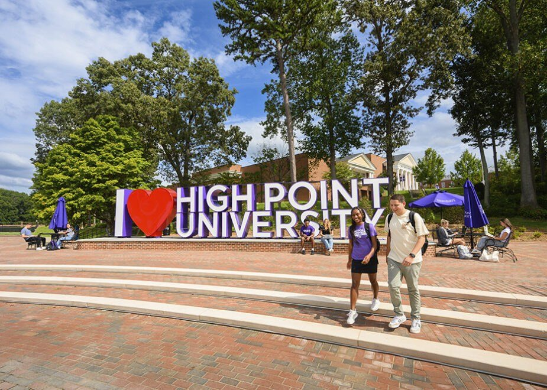
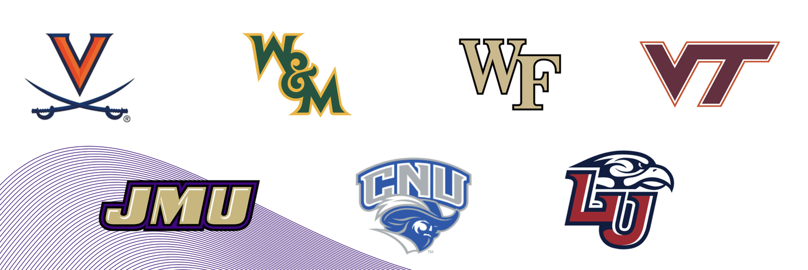
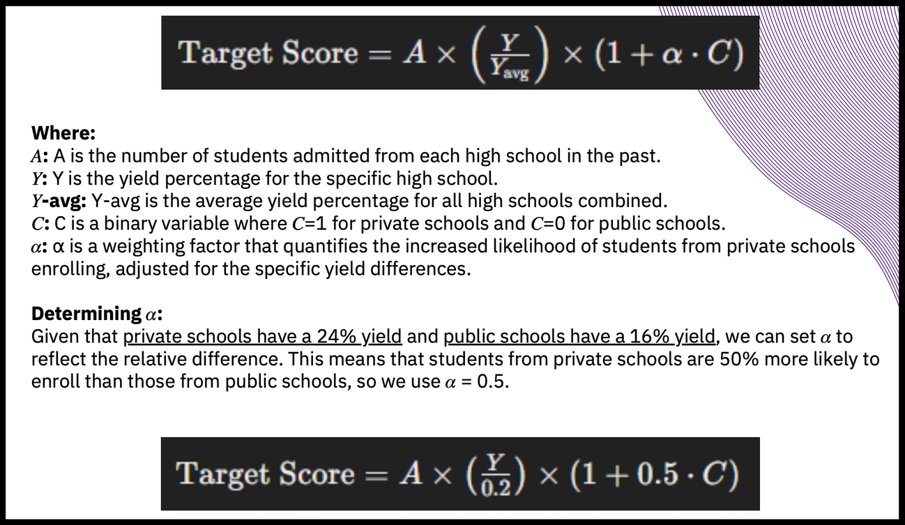
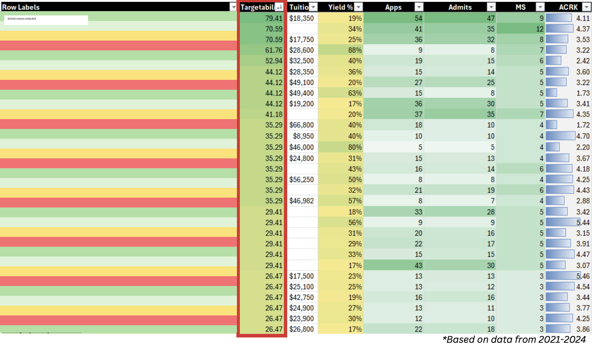
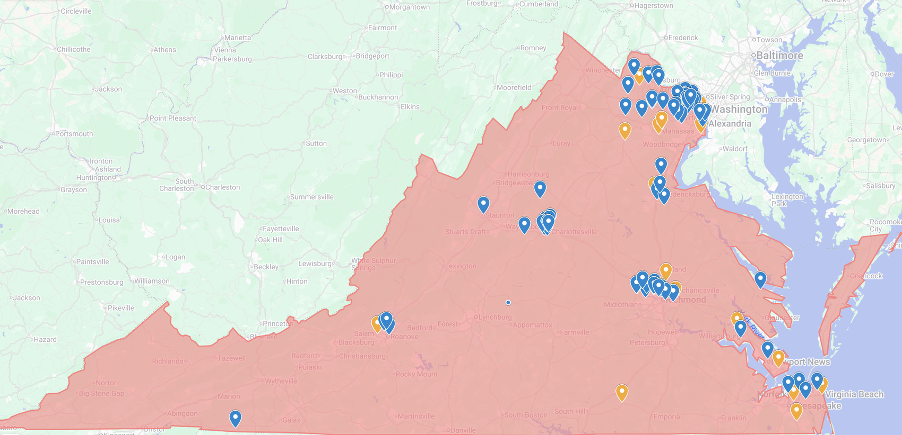
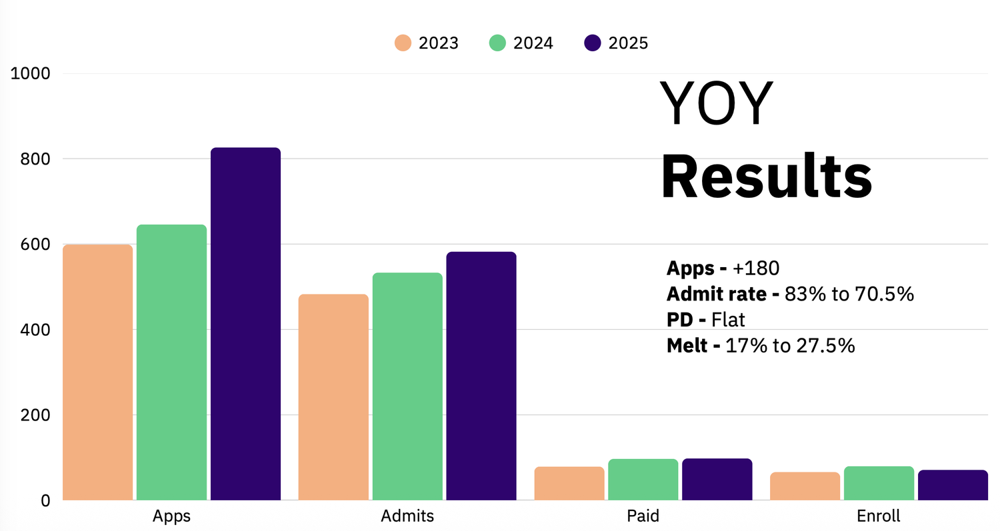

Starting Problem
When I took on Virginia as a recruitment market for High Point University, the region had clear potential but needed a more focused strategy.
Virginia had strong student pockets, high-income areas, academically competitive schools, and enough proximity to campus for visits to matter. But it was also a difficult market. Families had strong in-state options, lower-cost public universities, and familiar private colleges. HPU had to earn attention and belief in a market where families already had credible alternatives.
The question I inherited was not simply, "How do we get more students from Virginia?" It was: where should we spend our time, which audiences were most likely to move, and how should we explain HPU's value in a way that felt credible to Virginia families?
HPU Is a Marketing Machine
HPU is not a traditional old university brand. It operates much more like a modern experience-driven, marketing-driven institution.
That matters because the work there is not just admissions operations. The university's growth depends heavily on positioning, experience design, parent perception, campus visits, brand storytelling, and the ability to make a premium education feel worth the investment.
HPU calls itself the "Premier Life Skills University," but in practice it is also one of the clearest examples of a university built around marketing, experience, and differentiation. For better or worse, the institution understands that families are not only choosing a school. They are choosing a story about who their student can become.
That made Virginia an interesting strategic problem. I was not trying to sell a generic college. I was trying to help families understand a highly specific, sometimes polarizing, highly experiential university in a market where skepticism was natural.

Market Tension
Virginia families were not evaluating HPU in a vacuum.
They were comparing it against Virginia Tech, JMU, UVA, William & Mary, Richmond, and other familiar options. They were asking practical questions about cost, distance, academic rigor, reputation, outcomes, and whether HPU's polished campus experience was meaningful or just impressive.
That tension shaped the strategy. HPU's experience was one of its biggest differentiators, but it could also create skepticism. Some families saw the campus and immediately understood the value. Others needed help connecting the experience to substance, preparation, and outcomes.
So the strategy had to do two things at once: build more demand and make that demand more intentional.

First Diagnosis
I started by looking at prior-year school-level data: applications, admits, deposits, yield, enrollment patterns, and visit behavior.
The first thing I noticed was that not all schools should be treated equally. Some schools produced interest but little movement. Some produced admits but weak yield. Others had smaller volume but much stronger potential.
One of the most useful findings was the difference between private-school and public-school performance in Virginia. Based on the data I reviewed, private-school students were about 50% more likely to enroll than public-school students, with private-school yield around 24% compared with public-school yield around 16%.
That changed how I thought about travel, targeting, and market opportunity. The old approach treated geography as the main organizing logic. I started thinking more in terms of probability: which schools, audiences, and relationships had the best chance of producing serious applicants and eventual enrollment?
Targetability Model
To make the strategy more disciplined, I built a targetability model for Virginia schools.
The goal was to create a practical way to prioritize schools instead of relying only on instinct, geography, or historical habit. The model helped me compare schools using multiple signals: application volume, admits, yield, school type, tuition context, academic quality, previous relationship strength, and fit with HPU's value proposition.
The point was not to make a perfect formula. The point was to create a better working tool for decision-making.
It gave me a way to ask: which schools deserve more attention, which schools should be maintained but not over-prioritized, which schools look promising because of volume but are not actually converting, and which smaller schools may be more valuable than they look?


Travel Strategy Shift
I used the targetability model to revise the Virginia travel strategy.
The biggest shift was moving from broad visibility to higher-probability school relationships. Instead of trying to be everywhere, I wanted the travel plan to spend more time in places where the audience, school context, and previous data suggested stronger potential.
That meant cutting college fairs from 26 to 14 and increasing school visits from 51 to 109.
This mattered because college fairs created visibility, but school visits created better conditions for strategy. They allowed for more tailored conversations, stronger counselor relationships, better audience reads, and more relevant messaging.
A school visit gave me a better chance to understand what students and parents were actually reacting to. It also gave HPU a more direct way to explain itself in context.

Qualitative Insight
The data helped me decide where to focus, but the conversations helped me understand what needed to be said.
During school visits, events, and follow-up conversations, I talked with Virginia students and parents about how they were evaluating HPU. The same concerns kept showing up: cost, reputation, academic seriousness, distance from home, and comparison to in-state options.
Those conversations helped me sharpen the message. For some families, the strongest frame was personalization and support. For others, it was professional preparation. For others, it was the way HPU could help a student become more confident, polished, and opportunity-ready.
The lesson was that HPU's value could not be explained the same way everywhere. The market needed more specific language for different school types and family mindsets.
AI-Assisted Workflow
I also used AI as a practical strategy tool.
I used it to help prepare school-specific context before visits and outreach. That included looking at school profiles, likely student priorities, parent concerns, socioeconomic context, competitive college sets, and possible objections.
I also used AI to help think through the targetability score, surface trends, synthesize data, and pressure-test whether patterns were specific to Virginia or reflective of the wider HPU experience.
The goal was not to outsource judgment. It was to make the preparation sharper. AI helped me move faster through background research and pattern recognition, but the actual decisions still came from the data, the market context, and the conversations I was having with families.
Results
The strategy produced a clear increase in demand.
Applications grew from 648 to 826, a 27.5% year-over-year increase. Visit-linked applications increased from 259 to 296. Presidential Scholars Weekend produced 99 attendees against a goal of 80. The admit rate also lowered from 83% to 70.5%, indicating stronger applications.
Those results suggested that the market was responding. Virginia was producing more interest, more visit-connected applications, stronger high-achiever engagement, and a more selective applicant pool.

What the Results Revealed
The results were strong, but they did not solve everything.
Deposits stayed relatively flat, and final enrollment declined. That was important because it showed the difference between generating interest and securing commitment.
The work increased demand, but it did not fully solve yield.
That became the next strategic learning. Virginia families were entering the funnel, but more work was needed after admission. The next phase would need earlier financial-fit conversations, stronger admitted-student follow-up, clearer parent messaging, and better comparison against in-state alternatives.
In other words, the first phase proved that the market had more potential than the previous approach was capturing. The next problem was conversion quality.
Final Takeaway
Virginia became a useful case study in working through an ambiguous market problem. The answer was not simply more activity, but better diagnosis, better prioritization, better travel decisions, and more specific messaging.
I used data to understand where the opportunity was, qualitative conversations to understand what families were reacting to, a targetability model to prioritize effort, and a revised travel strategy to shift from broad visibility to stronger school relationships.
The biggest lesson was that growth strategy is not just about creating more demand. It is about understanding what kind of demand you are creating, where it is coming from, and what still has to happen before interest becomes commitment.